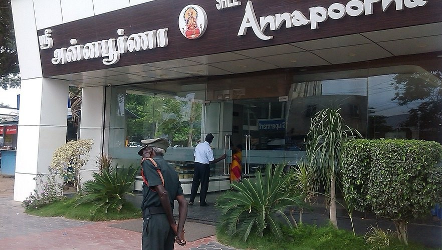

Explore The
Unexplored!!
Sree Annapoorna – The Icon of South Indian Cuisine
üìç Locations: RS Puram, Peelamedu, Gandhipuram (Multiple branches)
üçΩÔ∏è Best For: Authentic South Indian vegetarian foodb
üïí Timings: 6:30 AM ‚Äì 10:30 PM
Sree Annapoorna is a legendary vegetarian restaurant chain that has been a staple of Coimbatore’s food culture for over 50 years. Known for its authentic Tamil Nadu-style breakfast and meals, this restaurant is always bustling with locals and visitors alike. The Ghee Roast Dosa, made with crispy golden-brown perfection and served with coconut chutney and spicy sambar, is one of the best in the city. Their idlis, pongal, and filter coffee are also crowd favorites. For lunch, the restaurant serves an elaborate South Indian meal on a banana leaf, featuring sambar, rasam, kootu, poriyal, and papadam, ensuring a complete traditional dining experience. The hygienic atmosphere, quick service, and authentic taste make it a must-visit spot in Coimbatore.
⭐ Must-Try Dishes: Ghee Roast Dosa, Filter Coffee, Mini Tiffin, South Indian Meals

Hari Bhavanam – The King of Non-Vegetarian Delicacies
üìç Location: Avinashi Road, Peelamedu
üçΩÔ∏è Best For: Authentic Chettinad-style non-vegetarian food
üïí Timings: 11:00 AM ‚Äì 11:00 PM
If you are craving flavor-packed Chettinad cuisine, Hari Bhavanam is the go-to restaurant in Coimbatore. Famous for its spicy and aromatic non-vegetarian dishes, this restaurant has been serving authentic Tamil Nadu-style meat delicacies for decades. Their Chicken Biryani is cooked to perfection with long-grain basmati rice, tender chicken, and a mix of traditional spices. The Mutton Chukka (spicy fried mutton) and Nattu Kozhi (country chicken) gravy are must-try dishes, bursting with bold flavors. The restaurant also serves fresh seafood options like prawn masala and fish fry, made with locally sourced ingredients. The rustic ambiance, quick service, and rich flavors make it a paradise for meat lovers.
⭐ Must-Try Dishes: Mutton Chukka, Chicken Biryani, Nattu Kozhi Curry, Fish Fry
Shree Anandhaas – The Perfect Spot for Tamil Nadu Delicacies
üìç Location: Peelamedu, Avinashi Road, Gandhipuram (Multiple branches)
üçΩÔ∏è Best For: Traditional Tamil meals and tiffin items
üïí Timings: 7:00 AM ‚Äì 10:30 PM
Shree Anandhaas is one of the most beloved vegetarian restaurants in Coimbatore, known for its high-quality ingredients, hygienic cooking methods, and delicious flavors. Their Ghee Masala Dosa, Pongal-Vada combo, and Special South Indian Thali are top favorites. The restaurant serves a variety of freshly made sweets and savories, including Mysore Pak and Badam Halwa. It is one of the best places for a pure vegetarian Tamil Nadu-style lunch, served on a banana leaf with unlimited servings of rice, sambar, and multiple side dishes. The simple yet elegant ambiance makes it an ideal place for families.
⭐ Must-Try Dishes: Ghee Masala Dosa, Pongal-Vada, South Indian Meals, Mysore Pak
That’s Y Food – A Fine Dining Experience with Global Flavors
üìç Location: RS Puram, Coimbatore
üçΩÔ∏è Best For: Multi-cuisine fine dining experience
üïí Timings: 12:00 PM ‚Äì 11:00 PM
For those who enjoy a fine dining experience with a mix of Indian and international flavors, That’s Y Food is the place to be. With a carefully curated menu featuring North Indian, Italian, and Asian dishes, this restaurant is perfect for foodies looking to try a variety of flavors. Their Paneer Tikka, Butter Chicken, and Hyderabadi Biryani are some of the top recommendations. The restaurant also serves Asian delicacies like Thai Green Curry and Dim Sum, adding an exotic touch to its menu. The elegant interiors, soft lighting, and impeccable service make it one of the best fine dining restaurants in Coimbatore.
⭐ Must-Try Dishes: Butter Chicken, Hyderabadi Biryani, Thai Green Curry, Paneer Tikka
The French Door – A European-Style Café Experience
üìç Location: Race Course Road, Coimbatore
üçΩÔ∏è Best For: Continental cuisine, desserts, and brunch
üïí Timings: 9:00 AM ‚Äì 11:00 PM
If you’re looking for a relaxing café with a European touch, The French Door is a perfect choice. This elegant café serves a mix of French, Italian, and continental dishes, making it one of the best brunch spots in Coimbatore. Their Eggs Benedict, Pasta Alfredo, and Wood-Fired Pizzas are highly recommended. The café is also known for its freshly brewed artisanal coffees, smoothies, and decadent desserts like Belgian waffles and Nutella pancakes. The aesthetic interiors, garden seating, and cozy ambiance make it an ideal place for date nights, casual meet-ups, or solo reading sessions.
⭐ Must-Try Dishes: Wood-Fired Pizza, Eggs Benedict, Waffles, Cold Brew Coffee